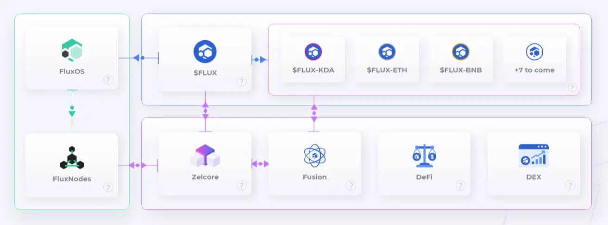
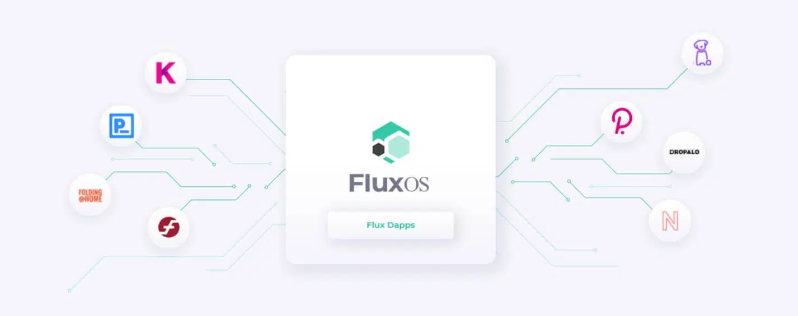
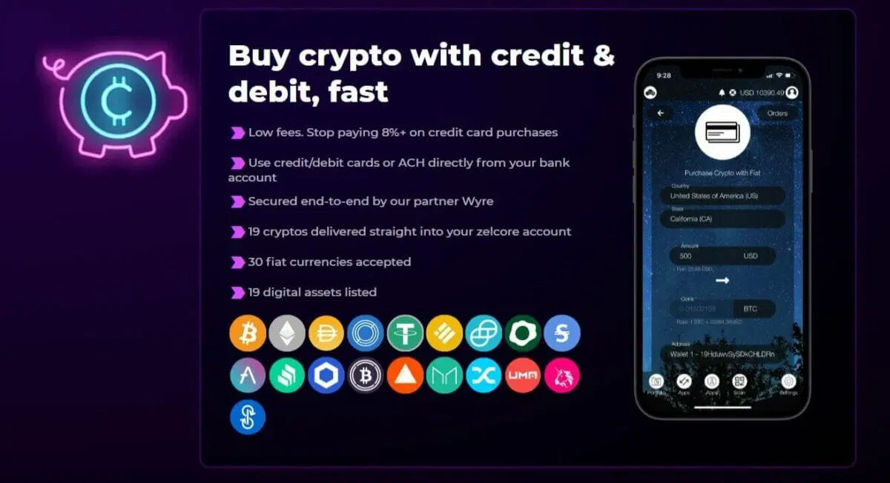
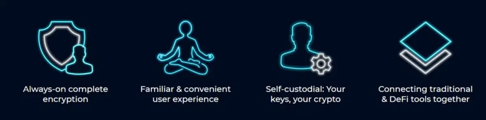
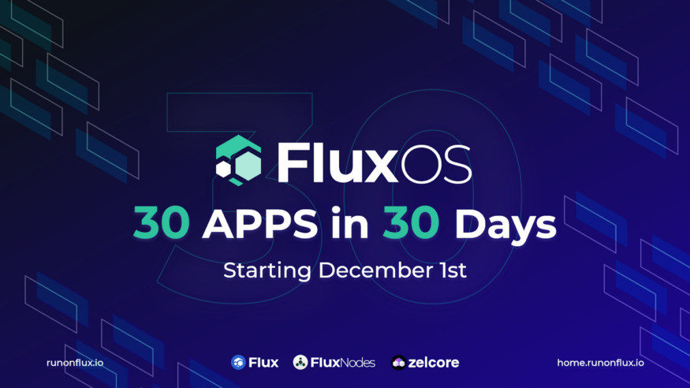

sont les projets crypto à ne pas expliquer vouloir révolutionner leurs secteurs respectifs. Mais plus rares encore sont ceux qui, de toute évidence, y parviennent enchaînant les succès et les étapes dans leur développement, pendant que d’autres se contentent d’entasser grandes promesses et ambitions ronflantes. Le projet crypto FLUX avec son objectif de faire office d’éclaireur vers un Web3 encore balbutiant appartient de toute évidence à la première catégorie. Et si la valeur d’un projet crypto ne saurait se limiter à la spéculation autour de son token, difficile cependant de ne pas voir dans l’insolente forme de la cryptomonnaie FLUX (+6500% en 1 an) la démonstration que le projet est désormais particulièrement pris au sérieux, autant par les ténors de l’industrie que par des investisseurs en perpétuelle recherche de pépites crypto sur lesquelles miser pour l’avenir.
Cet article sponsorisé de présentation vous est proposé en collaboration avec FLUXFLUX fait partie de ces « crypto-mondes« , plus écosystème complexe que projet monolithique, l’ensemble étant assorti de multiples ramifications : réseau blockchain et wallet bien sûr, mais également masternodes, incubateur (FluxLab) et même plus étonnamment système d’exploitation au travers de FluxOX, environnement de travail opensource faisant office de layer 2 au réseau principal et permettant le déploiement de nouveautés du type « Blockchain as a Service » (BaaS), avec une efficacité et une pertinence dont un Amazon Web Service n’aurait pas à
Fork de ZCash, le projet FLUX est né discrètement en janvier 2018 sous l’identité ZELCash (ZEL). 3 ans plus tard, afin d’éviter toute confusion avec son illustre ancêtre et de manière à être plus en phase avec la – ou plutôt les – directions nouvelles prises par l’initiative, le projet changeait de nom pour affirmer son identité et devenir à la fin du premier trimestre 2021 celui qu’on connaît aujourd’hui. Ce rebranding n’était pas pour autant un renoncement, et on retrouve encore aujourd’hui ça et là des hommages aux premiers chapitres de l’histoire, par exemple dans le système d’identification ZelID ou le nom du wallet multi-blockchain ZELCore dont nous parlerons un peu plus loin.
Et si les équipes de FLUX semblent couvrir de nombreuses directions simultanément, c’est que l’ambition est aussi protéiforme que vaste : poser les fondations sur lequel le Web3 – cette prochaine itération du réseau des réseaux qu’on appelle parfois « l’Internet de la valeur » – pourra construire.
« L’écosystème Flux se compose d’une suite de services informatiques décentralisés et de solutions blockchain-as-a-service, réunis pour offrir un environnement de développement interopérable et décentralisé de type AWS. Flux utilise un token natif fonctionnant en preuve de travail pour alimenter cet écosystème, offrant des incitations pour les hébergeurs de ressources matérielles, la gouvernance on chain et la limitation des mauvais acteurs via des exigences de staking. Le système d’exploitation de Flux fonctionne au-dessus de Linux pour fournir au réseau une puissance de calcul vérifiée et de qualité professionnelle et utilise la blockchain pour assurer la transparence des opérations de gouvernance. » Flux Wiki
FLUX fonctionne au travers d’un réseau de masternodes (2300 à l’heure actuelle), permettant la maintenance d’un réseau opérationnel 24/7, lui-même soutenant un environnement d’applications et d’échanges de valeur un peu plus dense chaque jour.
Le réseau FLUX est permissionless , autrement dit quiconque peut le rejoindre en tant qu’utilisateur des services qui y sont délivrés, mais également pour y devenir acteur opérationnel de la blockchain, en opérant un masternode.
On rappellera au passage qu’un masternode implique foncièrement la maintenance d’un serveur informatique et le stockage d’une certaine quantité d’un actif crypto (ou « collatéral« ), en l’occurrence des jetons FLUX. Maintenir et opérer ce masternode permet la sécurisation du réseau et le fonctionnement des services qui s’y opèrent. Par ailleurs, posséder tout ou partie d’un masternode permet d’obtenir une rétribution en cryptomonnaies FLUX. Pour en apprendre un peu plus sur les masternodes, vous pourrez vous arrêter un instant sur cet article.
Parallèlement aux masternodes, il est également possible de miner de la cryptomonnaie FLUX. En effet, le réseau FLUX fonctionne sur une mécanique de Preuve de travail (ou PoW, Proof of Work). A l’avenir, une transition osée vers le uPow ( Useful Proof of Work ) sera établie. En revanche, contrairement à Bitcoin, le minage de cryptomonnaies FLUX repose sur un modèle dit « ASICs résistant » . Il est donc possible de miner des FLUX sans avoir nécessairement recours à de puissantes machines dédiées.
S’agissant du minage de FLUX à partir d’ordinateurs de bureau grand public, le youtuber bien connu TK Mining propose un tutoriel très complet :
Dans le cadre de l’anticipation du déploiement des mécaniques de Finance Décentralisée et conformément à la tendance actuelle à l’interopérabilité, le FLUX a commencé à se déployer sur plusieurs autres blockchains de premier ordre, jetant des passerelles (bridges) entre les différents réseaux principaux. Des FLUX « wrapped » évoluent ainsi désormais notamment sur la Binance Smart Chain, Kadena ou Ethereum. Ce déploiement, loin d’être fini, verra l’agrégation des réseaux Tron et Solana d’ici mi-décembre.
Détail intéressant, dans le cadre du déploiement de ces parallel assets, FLUX distribue aux holders de tokens FLUX des airdrops des nouveaux wrapped tokens (FLUX-BSX ou FLUX-KDA par exemple). Plusieurs autres réseaux devant être concernés dans les prochains mois par des migrations similaires, l’opération peut être potentiellement assez lucrative pour les détenteurs de tokens FLUX. Seule condition pour être éligible : détenir ses FLUX sur un wallet personnel, et plus précisément sur le portefeuille maison Zelcore.
Autre aspect intéressant et rémunérateur, à chaque parallel assets créés, 1/10 des flux générés sont rétribués aux mineurs et détenteurs de Masternodes
Outre permettre de manipuler la devise native FLUX, elle accueille également ses différents parallel assets ainsi que des dizaines de cryptomonnaies et devises FIAT qu’il est possible de swapper entre elles en quelques clics. L’achat de cryptomonnaies est permis par carte de crédit et l’application offre également une intégration poussée avec des plateformes d’exchanges de référence parmi lesquelles Binance, Coinbase Pro ou FTX.
Bien évidemment, Zelcore est une application de portefeuille crypto non-custodial, autrement dit, Zelcore vous assure de toujours conserver le contrôle de vos clefs privées, et par extension de vos fonds, sans le moindre intermédiaire. L’utilisation d’une authentification forte d2fa, authentification décentralisée à 2 facteurs, vient assouvir un peu plus les besoins de protections de ses utilisateurs.
Dans le cadre d’une simplification bienvenue, l’utilisateur dispose également de l’assistance aussi discrète qu’efficace de EVE, une sorte d’IA qui à l’instar de l’Alexa d’Amazon ou du Siri d’Apple sera en mesure de comprendre et exécuter un grand nombre de requêtes naturelles, épargnant à l’utilisateur la maîtrise d’un jargon technologique parfois rebutant pour le grand public, sans sacrifier pour autant la sécurité et la robustesse d’une solution purement décentralisée.
Les fondations du Web3 ne se construiront pas seulement sur des grandes idées et de bonnes intentions, mais impliqueront un effort aussi colossal que collectif. C’est à ce titre que le projet Flux cherche à régulièrement se challenger et à créer des événements célébrant innovations et performances technologiques. FLUX vient ainsi d’annoncer un calendrier de l’avent original avec la présentation et le lancement de 30 Apps sur son réseau, tout au long d’autant de jours en décembre.
« En juillet dernier, nous avons organisé un événement intitulé » 20 in 20 « , qui a vu le lancement de vingt nouvelles applications décentralisées sur le réseau Flux. Cependant, depuis juillet, pratiquement tout ce qui est lié à Flux a augmenté, le nombre de nœuds en ligne, la puissance de minage, le prix de Flux, le nombre de développeurs actifs et de membres de l’équipe, et presque tous les autres indicateurs de succès imaginables. Tout est à la hausse, donc « 20 en 20 » ne suffit plus.
Ainsi, à partir du 1er décembre 2021, nous donnerons le coup d’envoi du « 30-en-30 » en vous apportant trente nouvelles Dapps sur la plateforme. Lorsque nous aurons terminé, nous aurons 30 nouvelles Dapps et nous serons catapultés dans l’année prochaine ! »
Resté largement sous le radar depuis 2018, FLUX a d’ores et déjà marqué de son empreinte l’année 2021. Une poignée de mois qui ont vu le projet passer du statut d’outsider à celui d’étoile montante du marketcap. Et pourtant, un simple coup d’œil à la fois aux projets en cours, ainsi qu’à la modestie relative de sa capitalisation permettent de se forger une conviction : FLUX pourrait en réalité n’en être qu’au début de son épopée sur le chemin du Web3.